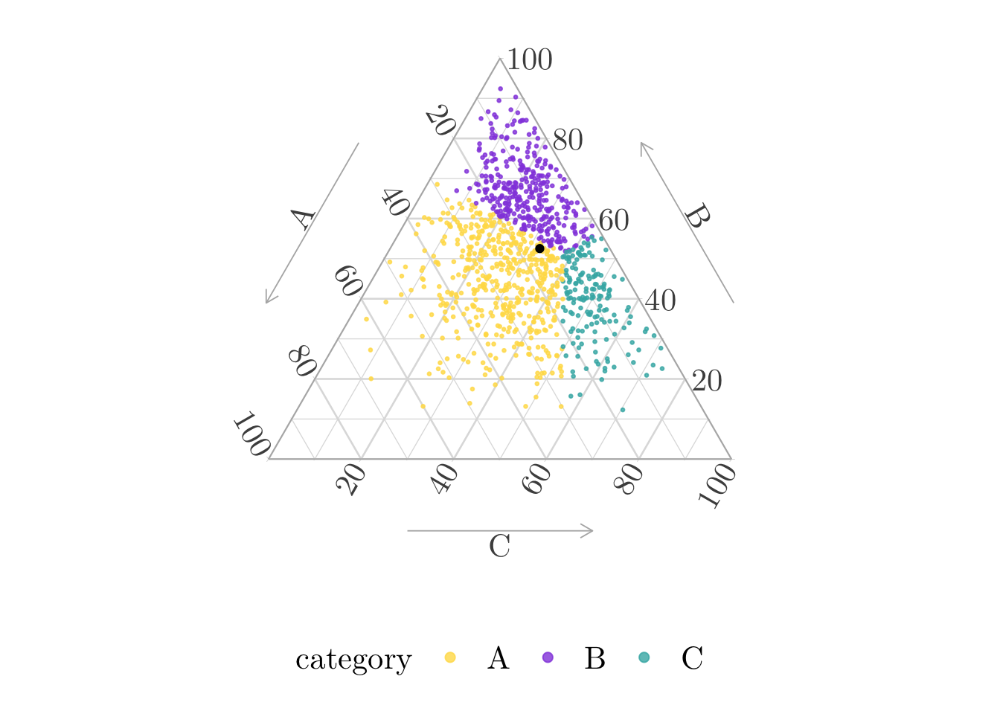
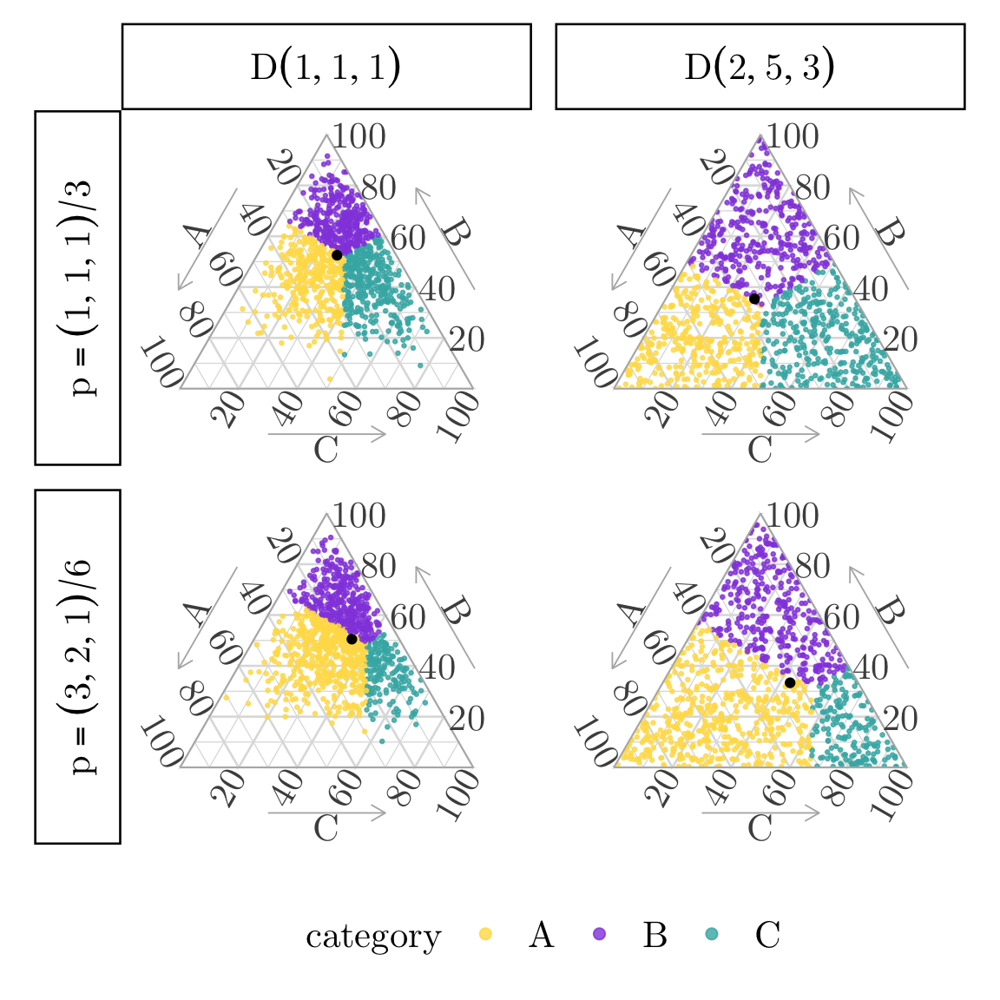

library(tidyverse)
library(transport)
library(MCMCpack)
library(ggtern)7 Barycentric Centroid of Balance
Objectives
In this page, we illustrate how to divide the simplex \(\mathcal{S}_3\) into three regions (\(R_A, R_B, R_C\)) so that each region contains a prescribed amount of probability mass (\(p_A, p_B, p_C\)) from a continuous distribution (here, Dirichlet).
In a nutshell, we use optimal transport theory (particularly Brenier’s theory) for transporting mass from a continuous distribution to a discrete one (point masses at the triangle’s corners).
The method is performed in two steps:
- Definition of a transport cost: squared distance between points.
- Find a map \(T\) that moves each point \(\boldsymbol{x}\) in the simplex to a vertex \(\boldsymbol{u}_i\) (e.g., \((1,0,0)\)) while minimizing total transport cost.
The map \(T\) is defined via Laguerre cells (power diagrams), which are convex regions where each point is closer (in a weighted sense) to one vertex than to the others.
The obtained regions together form a weighted Voronoi diagram on the simplex. Each region has exactly the desired share of the total probability mass: \(\int_{R_i} f(\boldsymbol{x}) dx = p_i\).
\[ \definecolor{wongBlack}{RGB}{0,0,0} \definecolor{wongGold}{RGB}{230, 159, 0} \definecolor{wongLightBlue}{RGB}{86, 180, 233} \definecolor{wongGreen}{RGB}{0, 158, 115} \definecolor{wongYellow}{RGB}{240, 228, 66} \definecolor{wongBlue}{RGB}{0, 114, 178} \definecolor{wongOrange}{RGB}{213, 94, 0} \definecolor{wongPurple}{RGB}{204, 121, 167} \definecolor{colGpeZero}{RGB}{127, 23, 14} \definecolor{colGpeUn}{RGB}{27, 149, 224} \]
Codes for graphical parameters.
library(extrafont)Registering fonts with RCodes for graphical parameters.
loadfonts(device = "pdf", quiet = TRUE)
# col_categ <- c("A" = "#ffdd55", "B" = "#944edf", "C" = "#3fb3b2")
col_categ <- c("#56B4E9", "#D55E00", "#CC79A7")
font_size <- 20
font_family <- "CMU Serif"
path <- "./figs/"
if (!dir.exists(path)) dir.create(path)Let us consider, as in Chapter 6, a categorical variable \(x \in \{{\color{colA}A}, {\color{colB}B}, {\color{colC}C}\}\), with group-specific distributions. We draw random samples from a Dirichlet distribution. Let us start with a concentration parameter \(\alpha=(2, 5, 3)\). Each sample lies in the 3-dimensional simplex \(\mathcal{S}_3\), and the resulting distribution has density \(f\) with respect to Lebesgue measure on \(\mathcal{S}_3\).
set.seed(123)
n <- 1000
# Concentration parameter:
alpha <- c(2, 5, 3)
# Draw n samples
samples <- rdirichlet(n, alpha = alpha)We want to find a partition \(R_A,R_B,R_C\) of \(\mathcal{S}_3\) such that \[ \int_{R_i}f(\boldsymbol{x})\mathrm{d}\boldsymbol{x}=p_i,~i\in\{A,B,C\}. \] We can use (classical) optimal transport theory to find partitions of the simplex that map probability mass from the Dirichlet to the discrete distribution \(\boldsymbol{p}=(p_A,p_B,p_C)\), in each vertex of the simplex, \[ \int_{T^{-1}(\boldsymbol{u}_i)}f(\boldsymbol{x})\mathrm{d}\boldsymbol{x}=p_i,~i\in\{A,B,C\}, \] where \(\{\boldsymbol{u}_A,\boldsymbol{u}_B,\boldsymbol{u}_C\}\) are unit vectors, vertices of the \(\mathcal{S}_3\) (i.e., \((1,0,0)\), \((0,1,0)\) and \((0,0,1)\)).
Note
Since the initial measures are absolutely continuous with respect to Lebesgue measure, and since both have finite second moment, there exists a unique optimal transport map \(T\) (and this map is the gradient of a convex function).
Let us consider for now that \(\boldsymbol{p}=(1/2,1/3,1/6))\).
# Unit vectors of S_3
vertices <- matrix(c(
1, 0, 0, # A
0, 1, 0, # B
0, 0, 1 # C
), byrow = TRUE, ncol = 3)
# source weights
mass_source <- rep(1 / n, n)
# target weights
mass_target <- c(3, 2, 1) / 6
# Cost matrix (squared Euclidean distance)
cost_matrix <- as.matrix(dist(rbind(samples, vertices))^2)
cost_matrix <- cost_matrix[1:n, (n + 1):(n + 3)]
# We assign eah observation to one vertex
# by minimizing the global transport cost, while matching marginals
# Solve the optimal transport plan
ot_plan <- transport::transport(
a = mass_source, b = mass_target, costm = cost_matrix,
method = "shortsimplex"
)
# Assign each sample to a category based on OT plan
assignment <- rep(NA, n)
# mass each source sends to each target
mass_matrix <- matrix(0, nrow = n, ncol = 3)
for (j in 1:nrow(ot_plan)) {
from <- ot_plan$from[j]
to <- ot_plan$to[j]
mass <- ot_plan$mass[j]
mass_matrix[from, to] <- mass_matrix[from, to] + mass
}
# Assign each source point to the target it contributes the most mass to
assignment <- max.col(mass_matrix, ties.method = "first")
colnames(samples) <- c("A", "B", "C")
samples_dirichlet_p <-
as_tibble(samples) |>
mutate(category = colnames(samples)[assignment])
samples_dirichlet_p# A tibble: 1,000 × 4
A B C category
<dbl> <dbl> <dbl> <chr>
1 0.101 0.837 0.0615 B
2 0.120 0.642 0.238 B
3 0.0520 0.235 0.713 C
4 0.196 0.537 0.267 A
5 0.0715 0.611 0.317 B
6 0.200 0.497 0.303 A
7 0.0943 0.804 0.101 B
8 0.0851 0.498 0.417 C
9 0.124 0.452 0.424 C
10 0.232 0.542 0.226 A
# ℹ 990 more rowsEach region \(R_i\) corresponds to the set of points \(\boldsymbol{x}\in\mathcal{S}_3\) such that \(\boldsymbol{u}_i\) minimizes \(\|\boldsymbol{x}-\boldsymbol{u}_i\|^2-\phi_i\) where \(\phi_i\in\mathbb{R}\) is a potential offset (weight, determined via dual optimization). This structure defines a power diagram, also known as a Laguerre–Voronoi diagram (or additively weighted Voronoi diagram). These subsets form a weighted Voronoi tessellation (in barycentric space), as shown in (simplex-baryc-centr-bal-example?).
Codes to create the Figure.
ggtern(
data = samples_dirichlet_p,
mapping = aes(x = A, y = B, z = C, color = category)
) +
geom_point(alpha = .8, size = .5) +
scale_colour_manual(name = "category", values = col_categ) +
theme_light(base_size = font_size, base_family = font_family) +
theme(
strip.background = element_rect(colour = "black", fill = NA),
strip.text.x = element_text(colour = "black"),
strip.text.y = element_text(colour = "black"),
# strip.text = ggtext::element_markdown(),
text = element_text(family = font_family, size = unit(font_size, "pt")),
axis.title = element_text(size = rel(.8)),
tern.axis.arrow.show = TRUE,
tern.axis.arrow.sep = .16,
tern.axis.vshift = .09,
legend.position = "bottom",
legend.title = element_text(size = .8 * font_size),
legend.text = element_text(size = .8 * font_size),
panel.border = element_rect(colour = NA)
) +
theme_hidetitles() +
guides(colour = guide_legend(override.aes = list(size = 2)))
We can, in addition, identify the intersection, i.e., the point where the minimum of the class-wise kernel density estimates is maximized. We do it by considering a grid over which we estimate the density. We create a function, generate_simplex_grid(), to generate a grid on \(\mathcal{S}_3\).
generate_simplex_grid <- function(resolution = 100) {
grid <- expand_grid(
A = seq(0, 1, length.out = resolution),
B = seq(0, 1, length.out = resolution)
) |>
mutate(C = 1 - A - B) |>
filter(C >= 0)
as_tibble(grid)
}We create a function, get_category_density_2D(), to estimate the kernel density estumation for a given category.
get_category_density_2D <- function(samples,
grid_points,
category_label) {
category_data <- samples |>
filter(category == !!category_label) |>
dplyr::select("A", "B")
eval_grid <- grid_points[, c("A", "B")]
if (nrow(category_data) < 10) {
H <- diag(0.01, 2)
} else {
H <- tryCatch(Hpi(category_data), error = function(e) diag(0.01, 2))
}
kde_result <- ks::kde(x = category_data, H = H, eval.points = eval_grid)
kde_result$estimate
}Let us create a triangular grid over (A,B,C) constrained to S_3:
grid_points <- generate_simplex_grid(resolution = 100)We evaluate the KDE for data from the source distribution:
dens_A <- get_category_density_2D(
samples = samples_dirichlet_p, grid_points = grid_points, category_label = "A"
)
dens_B <- get_category_density_2D(
samples = samples_dirichlet_p, grid_points = grid_points, category_label = "B"
)
dens_C <- get_category_density_2D(
samples = samples_dirichlet_p, grid_points = grid_points, category_label = "C"
)Then, we can find the point where min(densities) is maximal.
min_dens <- pmin(dens_A, dens_B, dens_C)
max_idx <- which.max(min_dens)
intersection_point <- grid_points[max_idx, ]
tb_intersection <- as_tibble(intersection_point)Codes to create the Figure.
p <- ggtern(
data = samples_dirichlet_p,
mapping = aes(x = A, y = B, z = C)
) +
geom_point(alpha = .8, size = .5, mapping = aes(color = category)) +
geom_point(data = tb_intersection) +
scale_colour_manual(values = col_categ) +
theme_light(base_size = font_size, base_family = font_family) +
theme(
strip.background = element_rect(colour = "black", fill = NA),
strip.text.x = element_text(colour = "black"),
strip.text.y = element_text(colour = "black"),
text = element_text(family = font_family, size = unit(font_size, "pt")),
axis.title = element_text(size = rel(.8)),
tern.axis.arrow.show = TRUE,
tern.axis.arrow.sep = .16,
tern.axis.vshift = .09,
legend.position = "bottom",
legend.title = element_text(size = .8 * font_size),
legend.text = element_text(size = .8 * font_size),
panel.border = element_rect(colour = NA)
) +
theme_hidetitles() +
guides(colour = guide_legend(override.aes = list(size = 2)))
p

7.1 Varying \(\alpha\) and \(\boldsymbol{p}\).
Let us now make \(\alpha\) and \(\boldsymbol{p}\) vary. We will consider \(\boldsymbol{\alpha} = (1,1,1)\) (uniform distribution), and \(\boldsymbol{\alpha} = (2, 5, 3)\); and \(\boldsymbol{p} = (1/3,1/3,1/3)\), and \(\boldsymbol{p} = (1/2,1/3,1/6)\).
For convenience, let us wrap the previous code in a function, get_data_assignment().
Code for the get_data_assignment function
#' @param n Number of observations to sample from the Dirichlet Distribution.
#' @param Vector of shape parameters, or matrix of shape parameters
#' corresponding to the number of draw. Default to \eqn{(1,1,1)}.
#' @param p Vector of target probabilities. Default to \eqn{(1/3, 1/3, 1/3)}.
#'
get_data_assignment <- function(n,
alpha = c(1, 1, 1),
p = c(1, 1, 1) / 3,
intersection_point = TRUE) {
# Draw n samples
samples <- rdirichlet(n, alpha = alpha)
# Unit vectors of S_3
vertices <- matrix(c(
1, 0, 0, # A
0, 1, 0, # B
0, 0, 1 # C
), byrow = TRUE, ncol = 3)
# source weights
mass_source <- rep(1 / n, n)
# target weights
mass_target <- p
# Cost matrix (squared Euclidean distance)
cost_matrix <- as.matrix(dist(rbind(samples, vertices))^2)
cost_matrix <- cost_matrix[1:n, (n + 1):(n + 3)]
# We assign eah observation to one vertex
# by minimizing the global transport cost, while matching marginals
# Solve the optimal transport plan
ot_plan <- transport::transport(
a = mass_source, b = mass_target, costm = cost_matrix,
method = "shortsimplex"
)
# Assign each sample to a category based on OT plan
assignment <- rep(NA, n)
# mass each source sends to each target
mass_matrix <- matrix(0, nrow = n, ncol = 3)
for (j in 1:nrow(ot_plan)) {
from <- ot_plan$from[j]
to <- ot_plan$to[j]
mass <- ot_plan$mass[j]
mass_matrix[from, to] <- mass_matrix[from, to] + mass
}
# Assign each source point to the target it contributes the most mass to
assignment <- max.col(mass_matrix, ties.method = "first")
colnames(samples) <- c("A", "B", "C")
samples <-
as_tibble(samples) |>
mutate(category = colnames(samples)[assignment])
#
# Intersection point
#
if (intersection_point == TRUE) {
# Create a triangular grid over (A,B,C) constrained to S_3
grid_points <- generate_simplex_grid(resolution = 100)
# Evaluation of KDE for data from the source distribution
dens_A <- get_category_density_2D(
samples = samples, grid_points = grid_points, category_label = "A"
)
dens_B <- get_category_density_2D(
samples = samples, grid_points = grid_points, category_label = "B"
)
dens_C <- get_category_density_2D(
samples = samples, grid_points = grid_points, category_label = "C"
)
# Find point where min(densities) is maximal
min_dens <- pmin(dens_A, dens_B, dens_C)
max_idx <- which.max(min_dens)
intersection_point <- grid_points[max_idx, ]
tb_intersection <- as_tibble(intersection_point)
} else {
tb_intersection <- NULL
}
list(
samples = samples,
tb_intersection = tb_intersection
)
}Using get_data_assignment(), we draw samples according to \(\boldsymbol{\alpha}\) and then we find partitions of the simplex that map probability mass from the Dirichlet to the discrete distribution \(\boldsymbol{p}\), in each vertex of the simplex.
samples_unif_unif <- get_data_assignment(
n = n,
alpha = c(1, 1, 1),
p = c(1, 1, 1) / 3
)
samples_unif_p <- get_data_assignment(
n = n,
alpha = c(1, 1, 1),
p = c(3, 2, 1) / 6
)
samples_dirichlet_unif <- get_data_assignment(
n = n,
alpha = c(2, 5, 3),
p = c(1, 1, 1) / 3
)
samples_dirichlet_p <- get_data_assignment(
n = n,
alpha = c(2, 5, 3),
p = c(3, 2, 1) / 6
)The results can be visualized in simplex-baryc-centr-bal-example-full, when \(\mathcal{D}(\boldsymbol{\alpha})\) with \(\boldsymbol{\alpha}=(1, 1, 1)\) (left) and \(\boldsymbol{\alpha}=(2, 5, 3)\) (right), when \(\boldsymbol{p}=(1,1,1)/3\) (top) and \(\boldsymbol{p}=(3,2,1)/6\) (bottom).
Codes to create the Figure.
p <- ggtern(
data = samples_unif_unif$samples |>
mutate(distrib = "Uniform", p = "(1,1,1)/3") |>
bind_rows(
samples_unif_p$samples |>
mutate(distrib = "Uniform", p = "(3,2,1)/6")
) |>
bind_rows(
samples_dirichlet_unif$samples |>
mutate(distrib = "2_5_3", p = "(1,1,1)/3")
) |>
bind_rows(
samples_dirichlet_p$samples |>
mutate(distrib = "2_5_3", p = "(3,2,1)/6")
) |>
mutate(
distrib = factor(
distrib,
levels = c("Uniform", "2_5_3"),
labels = c(
"Uniform" = parse(text = latex2exp::TeX("D(1,1,1)")),
"2_5_3" = parse(text = latex2exp::TeX("$D(2,5,3)$"))
)
),
p = factor(
p,
levels = c("(1,1,1)/3", "(3,2,1)/6"),
labels = c(
"(1,1,1)/3" = parse(text = latex2exp::TeX("$p=(1,1,1)/3$")),
"(3,2,1)/6" = parse(text = latex2exp::TeX("$p=(3,2,1)/6$"))
)
)
),
mapping = aes(x = A, y = B, z = C)
) +
geom_point(alpha = .8, size = .5, mapping = aes(color = category)) +
# geom_point(
# data = samples_unif_unif$tb_intersection |>
# mutate(distrib = "Uniform", p = "(1,1,1)/3") |>
# bind_rows(
# samples_unif_p$tb_intersection |>
# mutate(distrib = "Uniform", p = "(3,2,1)/6")
# ) |>
# bind_rows(
# samples_dirichlet_unif$tb_intersection |>
# mutate(distrib = "2_5_3", p = "(1,1,1)/3")
# ) |>
# bind_rows(
# samples_dirichlet_p$tb_intersection |>
# mutate(distrib = "2_5_3", p = "(3,2,1)/6")
# ) |>
# mutate(
# distrib = factor(
# distrib,
# levels = c("Uniform", "2_5_3"),
# labels = c(
# "Uniform" = parse(text = latex2exp::TeX("D(1,1,1)")),
# "2_5_3" = parse(text = latex2exp::TeX("$D(2,5,3)$"))
# )
# ),
# p = factor(
# p,
# levels = c("(1,1,1)/3", "(3,2,1)/6"),
# labels = c(
# "(1,1,1)/3" = parse(text = latex2exp::TeX("$p=(1,1,1)/3$")),
# "(3,2,1)/6" = parse(text = latex2exp::TeX("$p=(3,2,1)/6$"))
# )
# )
# )
# ) +
scale_colour_manual(values = col_categ) +
facet_grid(p ~ distrib, labeller = label_parsed, switch = "y") +
theme_light(base_size = font_size, base_family = font_family) +
theme(
strip.background = element_rect(colour = "black", fill = NA),
strip.text.x = element_text(colour = "black"),
strip.text.y = element_text(colour = "black"),
text = element_text(family = font_family, size = unit(font_size, "pt")),
axis.title = element_text(size = rel(.8)),
tern.axis.arrow.show = TRUE,
tern.axis.arrow.sep = .16,
tern.axis.vshift = .09,
legend.position = "bottom",
legend.title = element_text(size = .8 * font_size),
legend.text = element_text(size = .8 * font_size),
panel.border = element_rect(colour = NA)
) +
theme_hidetitles() +
guides(colour = guide_legend(override.aes = list(size = 2)))
p

Codes to export the figure in PDF.
filename <- "baryc-centr-bal"
ggsave(
p, file = str_c(path, filename, ".pdf"),
height = 3.3*1.75, width = 3.25*1.75,
family = font_family,
device = cairo_pdf
)
# Crop PDF
system(paste0("pdfcrop ", path, filename, ".pdf ", path, filename, ".pdf"))